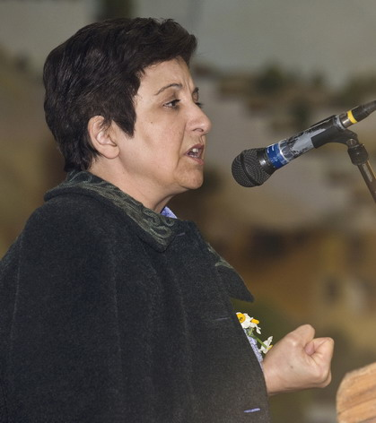

پذيرش > سایت نوشته ها > از قوانین تبعیضآمیز تا دخالت بشردوستانه


 از قوانین تبعیضآمیز تا دخالت بشردوستانه از قوانین تبعیضآمیز تا دخالت بشردوستانه
23 آبان 1390 - گفتگو با شیرین عبادی - نسخه قابل چاپ
من با لغت حمله نظامی بشردوستانه اساسا مشکل دارم. دخالت اگر بشردوستانه است که به همراه بمباران نمیتواند باشد. وقتی از دخالت بشردوستانه صحبت میشود، حتما باید غیرنظامی و غیرتهاجمی باشد. دخالت بشردوستانه یعنی این که با کمک تکنولوژی و از طریق وسایل مدرن به کمک مردم برویم.
در چند روز گذشته شیرین عبادی سخنرانیهایی در هلند ایراد کرد. رابطه اسلام و حقوق بشر، وضعیت کشورهای عربی پس از سرنگونی دیکتاتورها، حقوق بشر در ایران و قوانین تبعیضآمیز جاری در ایران علیه زنان محورهای عمده سخنان او بودند. او مهمترین مساله زنان ایران را قوانینی میداند که تبعیضآمیزند و زنان را به شهروند درجه دو تبدیل کردهاند. و مهمترین وظیفه جنبش زنان: مبارزه برای رفع کامل تمامی تبعیضات بر اساس جنسیت. گفتگوی شهرزاد نیوز با شیرین عبادی را در زیر میخوانید.
حقوق بشر یکی از محورهای مهم سخنان شما در آمستردام بود. در این رابطه سئوالی در مورد اعدامها در ایران. اعدامها دو دستهاند. اعدام فعالان سیاسی و اعدامهای غیر سیاسی. اعدامهای سیاسی روشن است چرا صورت میگیرند. اما در سال جاری تا کنون بیش از 300 نفر با اتهامات غیرسیاسی مانند قاچاق مواد مخدر، قتل و غیره اعدام شدهاند. با توجه به فشار بینالمللی که روی ایران به دلیل تعداد بالای اعدامها هست، علت افزایش اعدامها چیست؟ رژیم با اعدامهای دسته دوم چه مسالهای را میخواهد حل کند؟
اعدامهای دسته دوم الزاما آن چیزی نیست که حکومت ادعا میکند. محاکمات پشت درهای بسته به دور از نظارت مردمی و بدون دخالت وکلای مستقل صورت گرفته است. بنابراین همیشه این شایعه وجود داشته که برخی از فعالان سیاسی و اجتماعی جزء این افراد باشند و از سوی دیگر با این اعدامها میخواهند جو ارعاب و وحشت را در اجتماع رواج دهند. خصوصا این که شاهد هستیم برخی از اعدامها در ملاء عام صورت میگیرد. اعدام درملاء عام یعنی مردم بیایید ببینید و بترسید. و بدانید که نتیجه اعمال بد، بدی که حکومت تعیین میکند چه چیز است، به کجا میانجامد. بنابراین خشونت حکومتی به خاطر ایجاد ترس و ارعاب مردم است.
اگر فرض را بر این بگذاریم که بخشی از کسانی که به اتهام جرایم غیرسیاسی اعدام میشوند واقعا چنین جرایمی را مرتکب شده باشند، اعدام میتواند مشکلی را حل کند؟
مسلما اعدام مشکلی را حل نمیکند. زیرا اگر با اعدام افراد خطاکار، خطا از بین رفتنی بود، دیگر هیچکس نمیبایست مرتکب خطاهایی مانند قتل یا قاچاق مواد مخدر بشود. اعدام جز ترویج خشونت چیز دیگری نیست. من با اعدام مخالفم.
نکته مهم دیگر در بحثهای شما عدم مغایرت اسلام با حقوق بشر بود. در عین حال گفتید که به جدایی دین از حکومت معتقدید، این به آن معناست که شما طرفدار قوانین عرفی و سکولارید؟
من طرفدار دمکراسی هستم و دمکراسی چند مولفه دارد. یکی از آنها جدایی هر نوع ایدئولوژی و مذهب از حکومت است. یعنی اداره جامعه باید بر مبنای خواست مردم و بدون پیشداوری بر اساس مذهب یا ایدئولوژی خاصی صورت بگیرد. اگر مردم قوانینی را طلب کنند که بر مبنای مذهب یا ایدئولوژی خاصی باشد، طبیعتا میبایست آن قوانین اجرا شود. اما، در این جا یک امای مهم هست: آن ایدئولوژی و مذهب بایستی طوری تفسیر و اجرا شود که با ضوابط حقوق بشر همخوانی داشته باشد. به بهانه مذهب یا ایدئولوژی نمیتوان حقوق بشر را نادیده گرفت. شاهد هستیم در کشورهایی که قیام مردمی صورت گرفته، به تدریج گروههای اسلامی سر کار میآیند. مثلا در تونس، اسلامیها با ائتلاف، اکثریت مجلس را به دست آوردند. ما نمیتوانیم بگوئیم چون اسلامیها برنده شدهاند، این انتخابات باطل است. نمیتوانیم به مردم بگوئیم حق ندارید به حزبی که دوستش دارید، و ما دوستش نداریم، رای بدهید. اما میتوانیم بگوئیم ایدئولوژی و مذهب شما هرچه که هست، محترم است منتها باید طوری تعبیر و اجرا شود که مطابق ضوابط حقوق بشر که یک استاندارد بینالمللی است، باشد. از این رو حرف همیشگی من این است که حکومتها حق ندارند به بهانه مذهب، یا به این بهانه که از مردم رای گرفتهاند، حقوق بشر را زیر پا بگذارند. از آن جا که این مساله به دمکراسی برمیگردد، در این جا مایلم تعریف خودم را از دمکراسی ارائه بدهم.
در کتابهای علوم سیاسی، دمکراسی را معمولا حکومت اکثریت مردم تعریف میکنند. اما اکثریتی که در یک انتخابات آزاد به قدرت میرسد (مثل تونس، یا انقلاب 1979 ایران)، حق ندارد هر طور دلش خواست حکومت کند. مثلا به بهانه مذهب حقوق نیمی از مردم اجتماع، یعنی زنان، را نادیده بگیرد. یا مانند چین، به بهانه ایدئولوژی، مخالفان خود را سرکوب کند. یا مانند آمریکا، به بهانه حفظ امنیت ملی، آزادیهای فردی را محدود کند، ایمیلها و مکالمات تلفنی را کنترل کند. هر بهانهای برای نادیدهگرفتن حقوق اقلیتهایی که داخل قدرت سیاسی نیستند، مردود است. حکومتی که در انتخابات آزاد به قدرت میرسد، فقط در چهارچوب دمکراسی میتواند حکومت کند. فراموش نکنید که بسیاری از دیکتاتورهای دنیا با دمکراسی به قدرت رسیدند؛ مثل هیتلر.
چهارچوب دمکراسی ضوابط حقوق بشر است. به این ترتیب حکومتها مشروعیت خودشان را فقط از صندوق رای و رای مردم نمیگیرند. بلکه از آرای مردم و احترام به حقوق بشر تواما میگیرند. در این تعریف از مفهوم دمکراسی میبینیم که به هر ایدئولوژی یا مذهبی که با آرای مردم به قدرت میرسد احترام گذاشته میشود، اما آنها حق ندارند ضوابط حقوق بشر را نادیده بگیرند. به این ترتیب در جامعهای مثل تونس اگر مسلمانها بقدرت برسند، باید اسلام را طوری تعبیر کنند که با ضوابط حقوق بشر قابل انطباق باشد.
اگر حزب اسلامگرای تونس که اکثریت آرا را بدست آورده و باید در ائتلاف حکومت تشکیل دهد، بخواهد قوانین شرعی را جاری کند، نه به شکل خشنی که در ایران هست یا طالبان مطرح میکند، بلکه به شکل ملایمتر و یا نوعی تلفیق پوشیده دین و دولت؛ مثلا به این شکل که اسلام مذهب رسمی کشور باشد، این را شما دمکراتیک میدانید؟ این که یک مذهب، مذهب رسمی باشد، به معنای اعمال تبعیض بر پیروان سایر مذاهب و کسانی نیست که مذهبی ندارند؟
دین باید از حکومت جدا باشد. بنابراین هیچ دینی و ایدئولوژی نبایست بر دین و ایدئولوژی دیگر برتری داشته باشد.
بحثی که این روزها مطرح است، احتمال حمله نظامی به ایران است. شما بارها گفتهاید که با حمله نظامی به ایران مطلقا مخالفید. اما از زمانی که ناتو در لیبی دخالت نظامی کرده، بحث دخالت نظامی به شکلی متفاوت مطرح میشود. بحث این نوع دخالت نظامی که به آن دخالت بشردوستانه گفته میشود، در میان روشنفکران ایرانی هم مطرح است. مقالاتی در دفاع یا علیه این نوع دخالت ها منتشر شده. شما چه فکر میکنید؟
من با لغت حمله نظامی بشردوستانه اساسا مشکل دارم. دخالت اگر بشردوستانه است که به همراه بمباران نمیتواند باشد. وقتی از دخالت بشردوستانه صحبت میشود، حتما باید غیرنظامی و غیرتهاجمی باشد. دخالت بشردوستانه یعنی این که با کمک تکنولوژی و از طریق وسایل مدرن به کمک مردم برویم. مثلا تلویزیون تاسیس کنیم. یا این که دولتی را از برخی تکنولوژیها که در سرکوب مردم استفادهمیشوند، محروم کنیم. استفاده از ساتلایت را برای دولتی ممنوع کنیم. این میشود دخالت بشردوستانه. اما اگر صحبت بمب و توپ و تانک و تفنگ وسط بیاید، این دیگر تهاجم است.
بحثی که مطرح میشود، موردی مشابه لیبی است.
وضعیت ایران با لیبی کاملا متفاوت است. در لیبی قیام مردمی شروع شد و قذافی اعلام کرد که مردم را میکشد و شروع به کشتار مردم کرد. تانکها آمدند به خیابانها. اتحادیه عرب چندین جلسه مذاکره با قذافی تشکیل داد. دولتهای اروپایی صحبت کردند تا جلوی کشتار را بگیرند. و قذافی گفت تا آخرین نفر مخالفان خودم را خواهم کشت. لیبی را آتش میزنم. در چنین شرایطی مردم لیبی دو راه داشتند: یا بمانند و کشته شوند، یا این که بجنگند و باز هم کشته شوند.
شرایط ایران فرق میکند. مسلما به آن حد نرسیده و خیلی فاصله دارد. در سراسر جنبش سبز، طبق آماری که سرکردگان جنبش سبز میدهند، 100 نفر کشتهشدهاند. و این با لیبی که قذافی در کمال وقاحت مقابل تلویزیونهای دنیا گفت تا آخرین نفر را میکشم، تفاوت دارد. مضافا این که بعد از قذافی دیدیم لیبی از بین رفت. زیرساختهایش را تماما از دست داد و دوباره ساختن لیبی هزینه و زمان زیادی میبرد.
بنابراین، بایستی به هر شیوه ممکن مانع بروز جنگ داخلی و یا تهاجم نظامی به ایران شویم. انتقاد ما از حکومت، یک انتقاد منطقی و مشروع است. اما باید ایرانی باقی بماند که بتواند حکومتی دمکرات در آن پا بگیرد.
در صورتی که حمله نظامی به ایران صورت گیرد، موضع جنبش زنان چه باید باشد؟
زنان و کودکان همواره قربانیان جنگها و ناآرامیهای داخلی و بینالمللی هستند. جنبش زنان از مدتها قبل در این رابطه اعلام موضع کرده و گفته با هر نوع تهاجم نظامی به هر صورت مخالف است. میتوانید به اطلاعیههای گروههای مختلف زنان از جمله مادران صلح یا مادران پارک لاله مراجعه کنید.
شهرزاد نیوز
ارسال به
بالاترین
،
توییتر
،
فریندفید
،
فیسبوک
در همين بخش :
 یک خبر تلخ؟ یک قانونشکنی؟ یک تصمیم بخشنامهای جدید؟ یک خبر تلخ؟ یک قانونشکنی؟ یک تصمیم بخشنامهای جدید؟
چرا بایست به سکسوالیته پرداخت؟ / نفیسه آزاد
آزارجنسی خانگی؛ «قربانی» نه، «نجات یافته»
زنان، بزرگترین بازندگان بهار عرب
سانسور از دیدگاه جنسیتی/الهه امانی
ديگر بخش ها :
طرح یک میلیون امضا
|
مقالات
|
سایت نوشته ها
|
اخبار
|
گزارش كمپين
|
گفت و گو
|
علیه سکوت
|
كوچه به كوچه
|
نامه های شما
|
گزارش ویژه
|
گفتگو با اعضا
|
ویژه سالگرد کمپین
|
تصویر برابری
|
دل آرام علی
|
تریبون
|
مقالات
|
تاریخ شفاهی
|
خارج از چارچوب
|
کتابخانه
|
درباره کمپین
|
کمپین در شهرها
|
کمپین در بند
|
صدای تغییر
|
ویژه 22 خرداد
|
لایحه حمایت از خانواده
|
گالری
|
عشا مومنی
|
امیر یعقوبعلی
|
خدیجه مقدم
|
راحله عسگری زاده و نسیم خسروی
|
پروین اردلان،جلوه جواهری، مریم حسین خواه، ناهید کشاورز
|
زینب پیغمبرزاده
|
سعیده امین، سارا ایمانیان، محبوبه حسین زاده، ناهید کشاورز و همایون نامی
|
احترام شادفر
|
نسیم سرابندی زاده،فاطمه دهدشتی
|
وبلاگ مهمان
|
پرونده خرم آباد
|
دستگیری ها
|
مریم مالک
|
پرستو اللهیاری
|
مهرنوش اعتمادی
|
سمیه رشیدی
|
Other Languages
|
همراهان
|
«فراخوان کمپین ده روز با بهاره هدایت»
| English
|